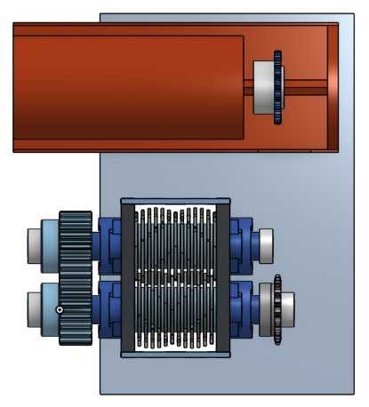
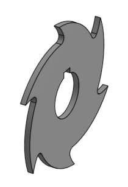
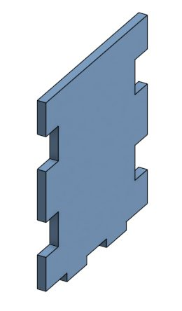
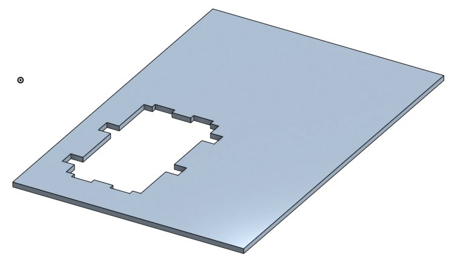
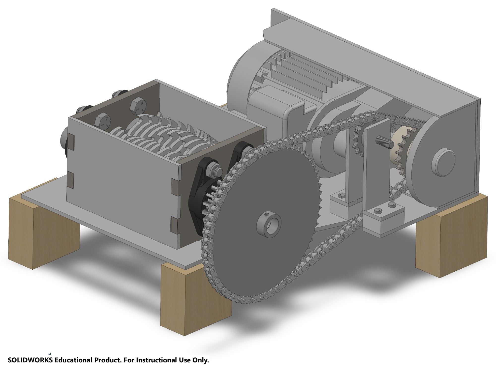
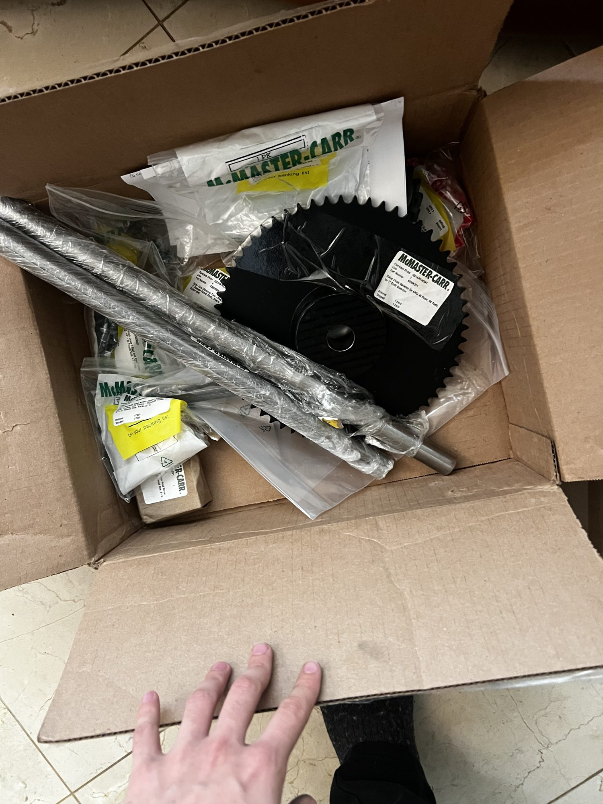
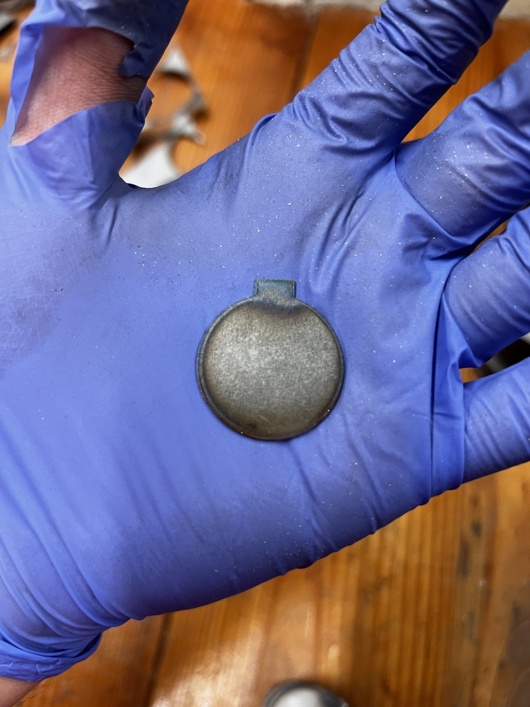
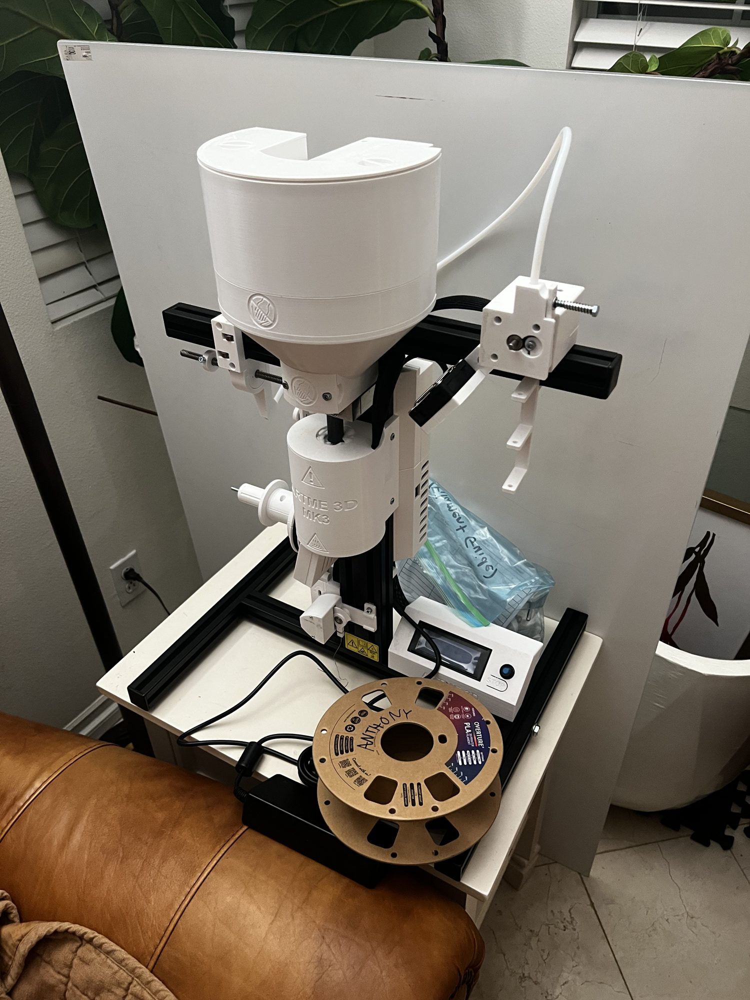

Chapter 01 · The spark
“Why not recycle it?”
I was set on getting involved in every STEM opportunity I could find. I joined the clubs and went to the workshops, but none of them felt very impactful, so I decided to start a project of my own.
Then one day I was 3D printing the frame for a DC motor I was designing. The print failed, and the people running the workshop threw it straight in the trash.
That's when the lightbulb went off. After some digging, I found out you can't just put failed prints in the recycling bin. So that became my project. I would build a machine that recycles failed 3D prints. It would build my skills and help the environment at the same time.
The catch was that I was starting with zero practical engineering experience, so it was a big thing to take on.
Chapter 02 · Finding the makerspace
I knew what I wanted to build. I didn't know how.
My original plan was to start a non-profit for recycling. I knew what I wanted to do, but I didn't have a fully fleshed out plan or any of the skills to make it happen. That included CAD.
So while the project was still just an idea, I went looking for a place that could give me advice. That search led me to the makerspace (STEMbassadors / IDEA Center), where I got heavily involved and learned the skills I needed for this project and every one after it.
Once I learned CAD there, I modeled my first concept part by part, with blades, spacers, walls and a base plate.
First concept




Parts





Chapter 03 · Final design
Every part, designed by me.
I did all of the design work myself in SolidWorks. A motor drives the shredder through a chain and sprockets, with the whole machine mounted on a single base plate.

Along the way


Chapter 04 · Making it
Make what you can. Outsource what you can't.
Most of the metalwork was outsourced, including cutting the sheet metal and welding the parts together, since I don't have metalworking equipment.
The shims I cut myself on a fiber laser.
Parts



Cutting shims




Welding & assembly


Chapter 05 · Where it is now
From one person to an organization.
The recycler has mostly lived on the back burner, worked on in bursts whenever I had time. But it did something bigger than shred plastic. It led me to the makerspace and pushed me to grow the skills that made every other project possible.
Now that I'm at USC, I've handed the project off to STEMbassadors, the non-profit makerspace, so their space can become a beacon of recycling for the community. What started as just me is now part of an organization.
